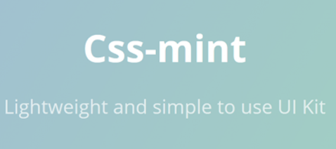
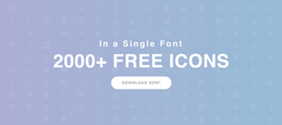
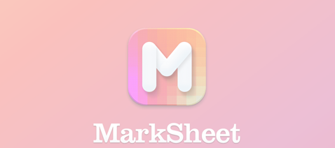
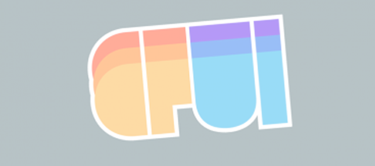
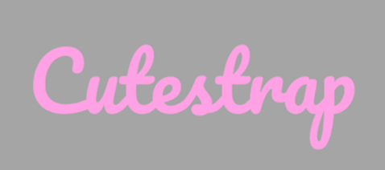
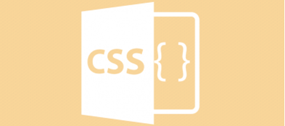
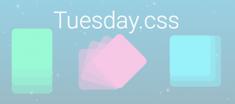

CSS Mint UI Kiti ile Düz Temalı Siteler Oluşturun
Arayüz | Ozan kesici

IcoFont – Tek Bir Font Dosyasında 2100+ İkon
Front-End | Ozan kesici

MarkSheet ile Sass, HTML ve CSS’yi Ücretsiz Öğrenin
Html-css | Ozan kesici

Frontend Geliştiriciler İçin CloudFlare UI Framework
Front-End | Ozan kesici

Bootstrap Alternatifi Cutestrap Framework
Arayüz | Ozan kesici

Reset CSS ve Normalize CSS Farkları
Front-end | Ozan kesici
Vital CSS Nedir ? Basit Web Framework
Html-css | Ozan kesici

Tuesday.css – İlginç CSS Animasyon Kütüphanesi Html-css | Ozan
kesici
Html-css | Ozan kesici
- - - -
Daha Fazla İçerik
- - - -